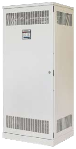

Capacitor banks
Capacitor banks are used for compensation of the induction reactive power consumed in most cases by induction motors. The purpose of compensation is to reduce the power consumed by the plant, which lowers electricity bills.ZPAS-NET produces two types of capacitor banks for automatic compensation:
- The basic version for network with small harmonic interference 15% < Sh/ST < 25%
- Version with protective chokes for network with harmonic interference 25% < Sh/ST < 35%
Each capacitor bundle is triple-protected by:
- self-extinguishing metallized polypropylene tape,
- electrical fuse,
- overpressure disconnector.
Our range of capacitor banks is presented in the following tables; however, configurations tailored to customer requirements are also available 